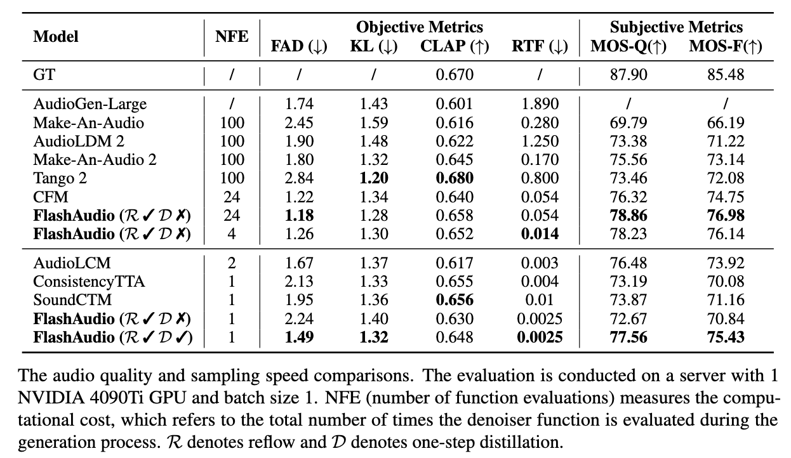

FlashAudio: Rectified Flows for Fast and High-fidelity Text-to-Audio Generation

Recent advancements in latent diffusion models (LDMs) have markedly enhanced text-to-audio generation, yet their iterative sampling processes impose substantial computational demands, limiting practical deployment. While recent methods utilizing consistency-based distillation aim to achieve few-step or single-step inference, their one-step performance is constrained by curved trajectories, preventing them from surpassing traditional diffusion models. In this work, we introduce FlashAudio with rectified flows to learn straight flow for fast simulation. To alleviate the inefficient timesteps allocation and suboptimal distribution of noise, FlashAudio optimizes the time distribution of rectified flow with Bifocal Distribution and proposes immiscible flow to minimize the total distance of data-noise pairs in a batch vias assignment. Furthermore, to address the amplified accumulation error caused by the classifier-free guidance (CFG), we propose Anchored Optimization, which refines the guidance scale by anchoring it to a reference trajectory. Experimental results on text-to-audio generation demonstrate that FlashAudio's one-step generation performance surpasses the diffusion-based models with hundreds of sampling steps on audio quality and enables a sampling speed of 400x faster than real-time on a single NVIDIA 4090Ti GPU.
@misc{liu2024flashaudiorectifiedflowsfast,
title={FlashAudio: Rectified Flows for Fast and High-Fidelity Text-to-Audio Generation},
author={Huadai Liu and Jialei Wang and Rongjie Huang and Yang Liu and Heng Lu and Wei Xue and Zhou Zhao},
year={2024},
eprint={2410.12266},
archivePrefix={arXiv},
primaryClass={eess.AS},
url={https://arxiv.org/abs/2410.12266},
}